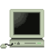
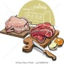

Articles

A short article about Favicons that cover: what favicons
are and how are they used. And how they are designed
Tarik Alyahya

Find full length music on Internet Archive
Forget sample music this guide will show
you how to get full length music.
Tarik Alyahya

Create a robust website directory
A guide exploring best approaches from
top sites and academic institutions
to create a robust website directory.
Tarik Alyahya

A guide explaining how pixels,
resolutions, FPS, and aspect ratio,
work togather.
Tarik Alyahya

An introduction to web font families
with examples.
Tarik Alyahya

Kitchen tips
Answers and solutions to help you in the kitchen.
Like how to handle meat safely, and is
microwaving eggs safe?
Tarik Alyahya